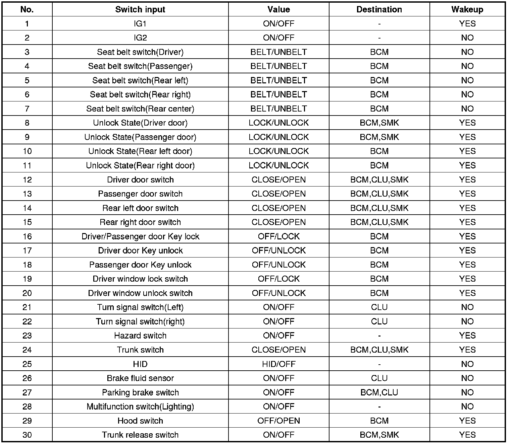
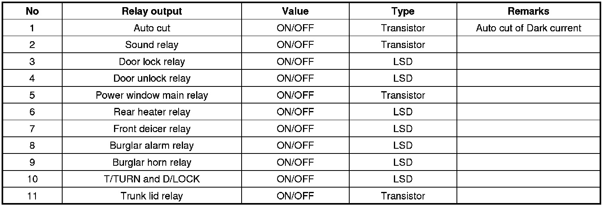
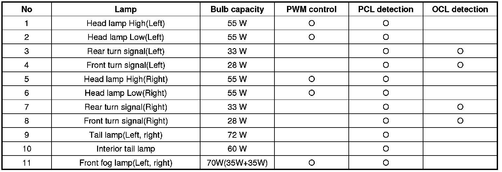
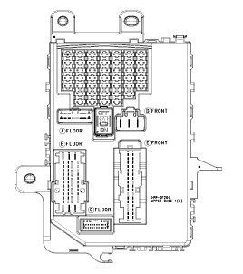
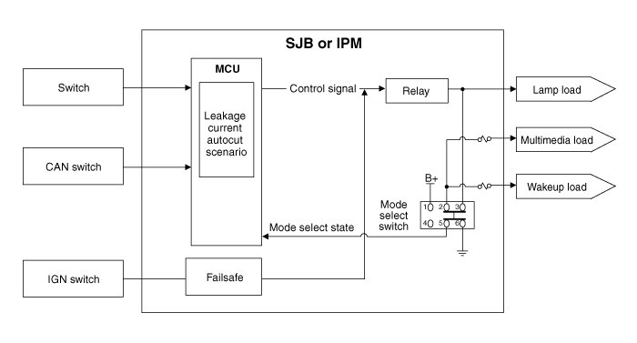
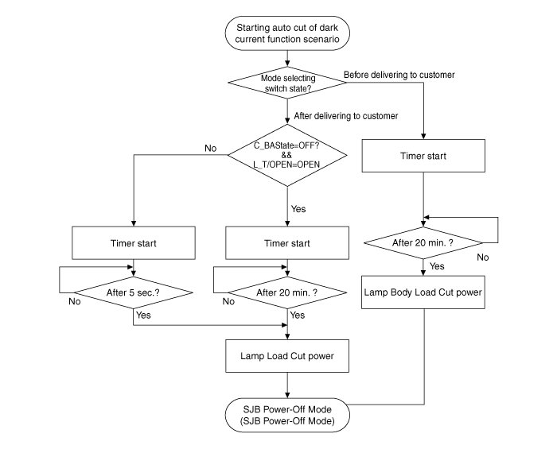
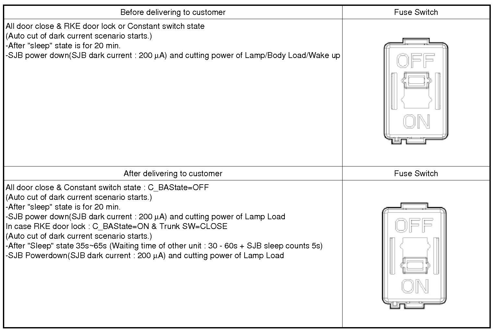
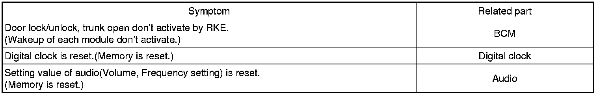

Relay Box: Description and Operation
Description
Smart Junction Box(SJB)
1. General function : Interior Junction Box + some functions of BCM
It controls loads with CAN communication and IPS.
2. Main function
A. Low speed CAN communication(100 kbps)
B. Self diagnostics(Lamp open/short)
C. Fail safe(When MCU/CAN is fail, Head lamp / Tail lamp directly drive)
D. Protection of bulb over-voltage(PWM function)
E. Cut of Over-load and Short : PCL(Program Current Limit)
Switch control input

Relay output control

Lamp control

*PCL(Programmable Current Limit) : It detects the current of lamp. If a current exceed the standard value, it cuts the current of lamp.
*OCL(Open Circuit Limit) : It detects the current of lamp. If a current is below the standard value, it controls current of lamp.
Auto cut system of dark current

1. Description : It cuts automatically power to be provided with load for reducing useless dark current according to vehicle state.

2. SJB had 3 modes, "Normal Mode", "Sleep Mode", "Power Off Mode". Auto cut of dark current practice in "Sleep Mode".
A. "Sleep" condition : IG OFF, constant input switch, CAN network doesn't activate.
B. "Sleep" resolutive condition : Any switch inputs, CAN network activates, KEY ON, IGN ON
C. "Power OFF" condition : The setting time of timer which is used by cutting a load power expires.
D. "Normal Mode" : SJB function normally activates.
E. "Sleep Mode" : It is low power mode and activates for reducing electricity consumption of SJB or IPM. Auto cut of dark current function activates.
F. "Power OFF Mode" : Power of MCU and circumferential circuit is cut for minimizing electricity consumption. Operation stops.
3. The explanation - The auto cut of dark current


4. Problem when fuse switch setting is wrong
: If a fuse switch is set to OFF(Before delivering to customer) by a customer or technician and auto cut function of dark current activates, below problems may happen.

*If fuse switch OFF(before delivering to customer) is set, power of BCM, Digital clock and audio is shut off.